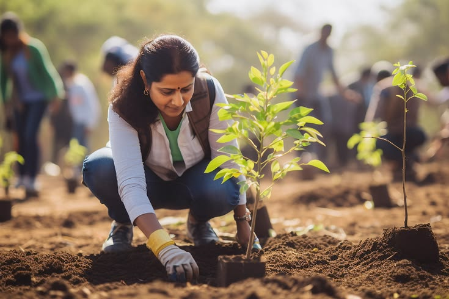
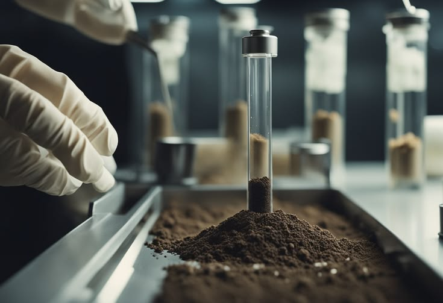
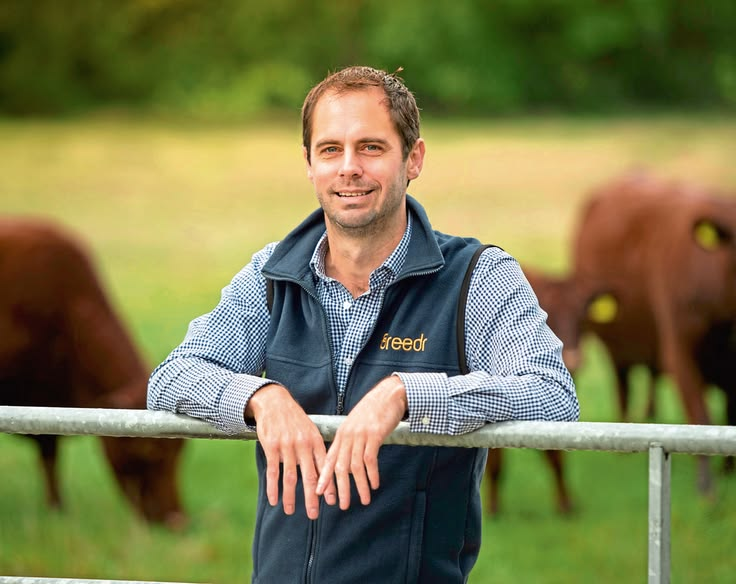
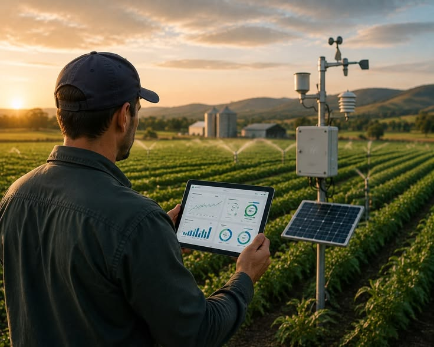

Epifluorescence Microscopy
Direct fungal hyphae and aerobic bacterial cell enumeration at 400x magnification.
ISO 17025 Compliant

Agroecologists, soil microbiologists, and ruminant nutritionists restoring commercial land with verifiable soil biology.
“Restoring the self-regulating subterranean microbial food web reactivates nutrient cycling that has sustained ecosystems for millennia.”

Four empirical assay frameworks quantifying biological health, carbon, and bioavailability.
Direct fungal hyphae and aerobic bacterial cell enumeration at 400x magnification.
High-temperature induction determination of recalcitrant mineral soil carbon.
24-hour microbial CO2 burst assays measuring active bio-available nutrients.
Quantification of predatory micro-fauna responsible for plant nutrient delivery.
Decades of laboratory research and commercial field implementation.
Specializing in mycorrhizal colonization and aerobic liquid biological amendments.

Designer of over 200 adaptive multi-paddock grazing plans for commercial rangelands.
Directing deep-core infrared spectroscopy and carbon verification registries.

Delivering measurable biological restoration and input independence across commercial broadacre and rangeland.